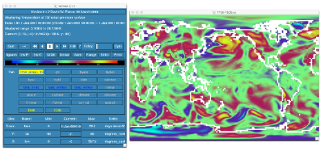

Add output variable in CAM
Add output variable in CAM#
Create a case called b1850_T750 using the compset B1850 at f19_g17 resolution.
Add an output field for the temperature at 750 mbar.
Output daily values of
T750andT500in theh1history file.Set the namelist to output a single
h1for the run.Make a 1-month run.
Click here for hints
Tip to add T750
Use
T500as a template for your changes.Find the subroutine containing
T750. For instance, in the CESMROOT, use the command:
grep –r T500 *
Tip to check your solution T750
When the run is completed, go to your archive directory:
check the fields
T750andT500are in the fileh1create a file with the difference between
T750-T500For instance, you can use
ncap2
ncap2 -s ’T750_minus_T500=T750-T500' b1850_T750.cam.h1.0001-01-01-00000.nc T750-T500.nc
Look at the difference with
ncview.
Click here for the solution
Create a new case b1850_T750 with the command:
cd /glade/p/cesm/tutorial/cesm2.1_tutorial2022/cime/scripts
./create_newcase --case ~/cases/b1850_T750 --compset B1850 --res f19_g17
Case setup:
cd ~/cases/b1850_T750
./case.setup
Locate the file where T500 is computed and copy it into
SourceMods/src.atm:
cp /glade/p/cesm/tutorial/cesm2.1_tutorial2022/components/cam/src/physics/cam/cam_diagnostics.F90 SourceMods/src.cam
Edit the file SourceMods/src.cam/cam_diagnostics.F90 and add the lines:
!++ add a variable for T750
call addfld ('T750', horiz_only, 'A', 'K','Temperature at 750 mbar pressure surface')
!++ add a variable for T750
if (hist_fld_active('T750')) then
call vertinterp(ncol, pcols, pver, state%pmid, 75000._r8, state%t, p_surf, &
extrapolate='T', ps=state%ps, phis=state%phis)
call outfld('T750 ', p_surf, pcols, lchnk )
end if
Edit the file user_nl_cam and add the lines:
nhtfrq = 0, -24
mfilt = 1, 31
fincl2 = 'T750', 'T500'
Change the run length:
./xmlchange STOP_N=1,STOP_OPTION=nmonths
If needed, change job queue and account number
For instance:
./xmlchange JOB_QUEUE=regular,PROJECT=UESM0011
Build and submit:
qcmd -- ./case.build
./case.submit
When the run is completed, check the fields T750 and T500 are in the file h1:
cd /glade/scratch/$user/archive/b1850_T750/atm/hist/
ncdump -h b1850_T750.cam.h1.0001-01-01-00000.nc
The file should contain:
float T500(time, lat, lon) ;
T500:units = "K" ;
T500:long_name = "Temperature at 500 mbar pressure surface" ;
T500:cell_methods = "time: mean" ;
float T750(time, lat, lon) ;
T750:units = "K" ;
T750:long_name = "Temperature at 750 mbar pressure surface" ;
T750:cell_methods = "time: mean" ;
If you don’t see these variables, check you correctly set the user_nl_cam.
Create a file with the difference between T750-T500:
cd /glade/scratch/$user/archive/b1850_T750/atm/hist/
ncap2 -s ‘T750_minus_T500=T750-T500' b1850_T750.cam.h1.0001-01-01-00000.nc T750-T500.nc
Look at the difference between T750-T500 with ncview:
cd /glade/scratch/$user/archive/b1850_T750/atm/hist/
ncview T750-T500.nc
The field T750-T500 looks like:

Figure: Overview of the CESM directories and the SourceMods directories.